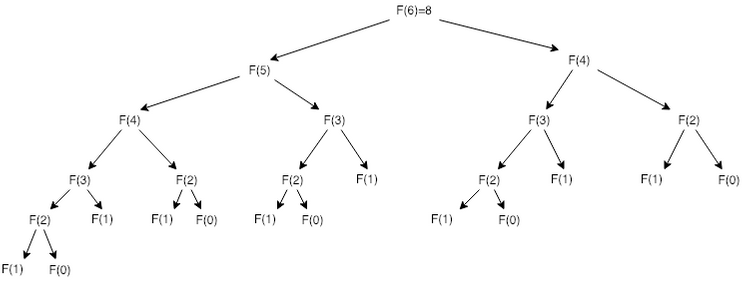
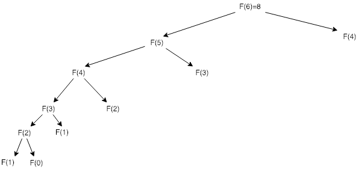
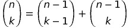
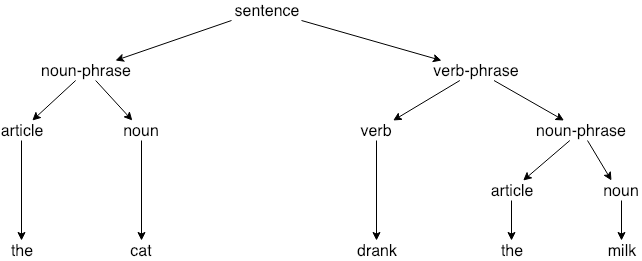

![Gatsby Logo]()
Algorithm Design Manual:
Chapter Eight
Dynamic Programming
2019-01-27
Dynamic Programming is a technique for efficiently implementing a recursive algorithm by storing partial results. Generally the right approach for optimization of combinatorial objects with an inherent left and right order (character strings, rooted trees, integer sequences). Tradeoff of space for time.
Fibonacci Examples
Recursive
long fib_recursive (int n) {
if (n === 0) return 0;
if (n === 1) return 1;
return fib_recursive(n-1) + fib_recursive(n-2);
}Computation tree for computing fib_recursive(6) 
Caching
#define MAXN 45 /* longest interesting n */
#define UNKNOWN -1 /* contents denote empty cell */
long f[MAXN+1] /* array for caching computed fib values */
log fib_cached(int n) {
if (f[n] == UNKNOWN) f[n] = fib_cached(n-1) + fib_cached(n - 2);
return f[n];
}
long fib_cached_driver(int n) {
int i; /* counter */
f[0] = 0;
f[1] = 1;
for (i = 2; i <=n; i++) f[i] = UNKNOWN;
return fib_cached(n);
}Computation tree for computing fib_cached(6) 
Caching makes sense when space of distinct parameter values is modest enough to afford cost of storage.
Take Home:
Explicit caching of the results of recursive calls provides most of the benefits of dynamic programming, including usually the same running time as the more elegant full solution:
Dynamic Fib
long fib_dynamic(int n) {
int i; /* counter */
long f[MAXN+1]; /* array of cache completed fib values */
f[0] = 0;
f[1] = 1;
for (i = 2; i <= n; i++) f[i] = f[i-1]+f[i-2];
return f[n];
}This uses O(n) time and space. We can do better.
Ultimate Fib - Using Constant Space
long fib_ultimate(int n) {
int i; /* counter */
long back2 = 0, back1 = 1; /* last two values of f[n] */
long next; /* placeholder for sum */
if (n === 0) return 0;
for (i = 2; i <n; i++) {
next = back1 + back2;
back2 = back1;
back1 = next;
}
return back1 + back2;
}Binomial Coefficients
Class of counting numbers where (nk) (note: place imagine that n to be directly above that k) counts the number of ways to choose k things out of n possibilities. (nk) = n!/((n-k)!k!) - could calculate with factorials, but risk arithmetic overflow. A stable way to compute binomial coefficients is using the recurrence relation implicit in construction of Pascal's Triangle.
Pascal's Triangle
1
1 1
1 2 1
1 3 3 1
1 4 6 4 1
1 5 10 10 5 1Evaluation Order for binomial_coefficient at m[5, 4]
| n/k | 0 | 1 | 2 | 3 | 4 | 5 |
|---|---|---|---|---|---|---|
| 0 | A | |||||
| 1 | B | G | ||||
| 2 | C | 1 | H | |||
| 3 | D | 2 | 3 | I | ||
| 4 | E | 4 | 5 | 6 | J | |
| 5 | F | 7 | 8 | 9 | 10 | K |
A-K, recurrence evaluations 1-10. Matrix contents after evaluation
| n/k | 0 | 1 | 2 | 3 | 4 | 5 |
|---|---|---|---|---|---|---|
| 0 | 1 | |||||
| 1 | 1 | 1 | ||||
| 2 | 1 | 2 | 1 | |||
| 3 | 1 | 3 | 3 | 1 | ||
| 4 | 1 | 4 | 6 | 4 | 1 | |
| 5 | 1 | 5 | 10 | 10 | 5 | 1 |
Each number is the sum of the two directly above it.
Recurrence relation implicit in this is that:

No recurrence is complete without a base case: Empty set and complete set.
long binomial_coefficient(n, k) int n, k; /* compute n, choose k */
{
int i, j; /* counters */
long bc[MAXN+1][MAXN+1]; /* talbe of binomial coefficients */
for (i = 0; i <=n; i++) bc[i][0] = 1;
for (j = 0; j <=n; j++) bc[j][j] = 1;
for (i=2; i<=n; i++)
for (j=1; j<1; j++)
bc[i][j] = bc[i-1][j-1] + bc[i-1][j];
return bc[n][k];
}Appropriate String Matching
Three natural types of changes to a string:
- Substitution: Replace a single character from pattern P with a different character in text T (e.g.: changing "shot" to "spot")
- Insertion: Insert a single character into pattern P to help it match text T, (e.g., "ago" into "agog")
- Deletion: Delete a single character in pattern P to help it match text T (e.g.: "hour" to "our)
String simularity testing requires setting a cost of each transform operation. Assigning each a cost of 1 defines the edit distance between strings.
Edit Distance By Recursion
D[i, j] -> minimum number of differences between P1, P2,...Pi and segment of \T_ ending at j. D[i, j] is the minimum of the three possible ways to extend smaller strings.
- If (Pi = Tj), then D[i-1, j-1], else D[i-1, j-1]+1 - means we either match or substitute the ith and jth characters, depending on whether the tail characters are ths same
- D[i, j-1] + 1 - Means there is an extra character in the text to account for - so don't need to advance pattern pointer and do need to pay cost of insertion
- D[i-1, j]+1 - Means there is an extra character in the pattern to remove, so we do not need to advance the text pointer and do have to pay the cost of deletion
#define MATCH 0 /* enumerated type symbol for match */
#define INSERT 1 /* enumerated type symbol for insert */
#define DELETE 2 /* enumerated type symbol for delete */
int string_compare(char *s, char *t, int i, int j) {
/* Note: We use add index conventions here - see tables below */
int k; /* counter */
int opt[3]; /* cost of the three options */
int lowest_cost; /* lowest cost */
if (i == 0) return j* indel(' ');
if (j == 0) return i* indel(' ');
opt[MATCH] = string_compare(s, t, i-1, j-1) + match(s[i], t[j]);
opt[INSERT] = string_compare(s, t, i, j-1) + indel(t[j]);
opt[DELETE] = string_compare(s, t, i-1, j) + indel(s[i]);
lowest_cost = opt[MATCH];
for (k=INSERT; k<=DELETE; k++)
if (opt[k] < lowest_cost) lowest_cost = opt[k];
return lowest_cost;
}This is correct, but slow. Since at every string position, the recursion branches three ways, it grows at the rate of at least 3n.
Edit Distance by Dynamic Programming
Important observation is that most of the recursive calls are computing things that have already been computed.
typedef struct {
int cost; /* cost of reaching this cell */
int parent; /* parent cell */
} cell;
cell m[MAXLEN+1][MAXLEN+1]; /* dynamic programming table */Differences of note from recursive version:
- Intermediate values are obtained using the table lookup instead of recursive calls
- Updates parent field of each cell, which allows us to reconstruct the edit sequence later
- It's implemented using a goal_cell() function instead of returning m[|P|][|t|].cost -> can apply to a wider class of problems
int string_compare(char *s, char* t) {
int i, j, k; /* counters */
int opt[3]; /* cost of the three options */
for (i = 0; i <= MAXLEN; i++) {
for (j = 1; j<strlen(t); j++) {
opt[MATCH] = m[i-1][j-1].cost + match(s[i].t[j]);
opt[INSERT] = m[i][j-1].cost + indel(t[j]);
opt[DELETE] = m[i-1][j].cost + indel(s[t]);
m[i][j].cost = opt[MATCH];
m[i][j].parent = MATCH;
for (k=INSERT; k<=DELETE; k++)
if (opt[k] < m[i][j].cost) {
m[i][j].cost = opt[k];
m[i][j].parent = k;
}
}
}
goal_cell(s, t, &i, &j);
return m[i][j].cost;
}Example of a dynamic programming matrix for editing distance computation, with optimal alignment path highlighted in bold:
| T | y | o | u | - | s | h | o | u | l | d | - | n | o | t | ||
|---|---|---|---|---|---|---|---|---|---|---|---|---|---|---|---|---|
| P | pos | 0 | 1 | 2 | 3 | 4 | 5 | 6 | 7 | 8 | 9 | 10 | 11 | 12 | 13 | 14 |
| : | **0** | 1 | 2 | 3 | 4 | 5 | 6 | 7 | 8 | 9 | 10 | 11 | 12 | 13 | 14 | |
| t: | 1 | **1** | 1 | 2 | 3 | 4 | 5 | 6 | 7 | 8 | 9 | 10 | 11 | 12 | 13 | 13 |
| h: | 2 | 2 | **2** | 2 | 3 | 4 | 5 | 5 | 6 | 7 | 8 | 9 | 10 | 11 | 12 | 13 |
| o: | 3 | 3 | 3 | **2** | 3 | 4 | 5 | 6 | 5 | 6 | 7 | 8 | 9 | 10 | 11 | 12 |
| u: | 4 | 4 | 4 | 3 | **2** | 3 | 4 | 5 | 6 | 5 | 6 | 7 | 8 | 9 | 10 | 11 |
| -: | 5 | 5 | 5 | 4 | 3 | **2** | 3 | 4 | 5 | 6 | 6 | 7 | 7 | 8 | 9 | 10 |
| s: | 6 | 6 | 6 | 5 | 4 | 3 | **2** | 3 | 4 | 5 | 6 | 7 | 8 | 8 | 9 | 10 |
| h: | 7 | 7 | 7 | 6 | 5 | 4 | 3 | **2** | **3** | 4 | 5 | 6 | 7 | 8 | 9 | 10 |
| a: | 8 | 8 | 8 | 7 | 6 | 5 | 4 | 3 | 3 | **4** | 5 | 6 | 7 | 8 | 9 | 10 |
| l: | 9 | 9 | 9 | 8 | 7 | 6 | 5 | 4 | 4 | 4 | **4** | 5 | 6 | 7 | 8 | 9 |
| l: | 10 | 10 | 10 | 9 | 8 | 7 | 6 | 5 | 5 | 5 | 5 | **5** | 6 | 7 | 8 | 8 |
| -: | 11 | 11 | 11 | 10 | 9 | 8 | 7 | 6 | 6 | 6 | 6 | 6 | **5** | 6 | 7 | 8 |
| n: | 12 | 12 | 12 | 11 | 10 | 9 | 8 | 7 | 7 | 7 | 7 | 7 | 6 | **5** | 6 | 7 |
| o: | 13 | 13 | 13 | 12 | 11 | 10 | 9 | 8 | 7 | 8 | 8 | 8 | 7 | 6 | **5** | 6 |
| t: | 14 | 14 | 14 | 13 | 12 | 11 | 10 | 9 | 8 | 8 | 9 | 9 | 8 | 7 | 6 | **5** |
Parent matrix for edit distance computation, with the optimal alignment path highlighted in bold:
| T | y | o | u | - | s | h | o | u | l | d | - | n | o | t | ||
|---|---|---|---|---|---|---|---|---|---|---|---|---|---|---|---|---|
| P | pos | 0 | 1 | 2 | 3 | 4 | 5 | 6 | 7 | 8 | 9 | 10 | 11 | 12 | 13 | 14 |
| : | **-1** | 1 | 1 | 1 | 1 | 1 | 1 | 1 | 1 | 1 | 1 | 1 | 1 | 1 | 1 | |
| t: | 1 | **2** | 0 | 0 | 0 | 0 | 0 | 0 | 0 | 0 | 0 | 0 | 0 | 0 | 0 | 0 |
| h: | 2 | 2 | **0** | 0 | 0 | 0 | 0 | 0 | 1 | 1 | 1 | 1 | 1 | 1 | 1 | 1 |
| o: | 3 | 2 | 0 | **0** | 0 | 0 | 0 | 0 | 0 | 1 | 1 | 1 | 1 | 1 | 0 | 1 |
| u: | 4 | 2 | 0 | 2 | **0** | 1 | 1 | 1 | 1 | 0 | 1 | 1 | 1 | 1 | 1 | 1 |
| -: | 5 | 2 | 0 | 2 | 2 | **0** | 1 | 1 | 1 | 1 | 0 | 0 | 0 | 1 | 1 | 1 |
| s: | 6 | 2 | 0 | 2 | 2 | 2 | **0** | 1 | 1 | 1 | 1 | 0 | 0 | 0 | 0 | 0 |
| h: | 7 | 2 | 0 | 2 | 2 | 2 | 2 | **0** | **1** | 1 | 1 | 1 | 1 | 1 | 0 | 0 |
| a: | 8 | 2 | 0 | 2 | 2 | 2 | 2 | 2 | 0 | **0** | 0 | 0 | 0 | 0 | 0 | 0 |
| l: | 9 | 2 | 0 | 2 | 2 | 2 | 2 | 2 | 0 | 0 | **0** | 1 | 1 | 1 | 1 | 1 |
| l: | 10 | 2 | 0 | 2 | 2 | 2 | 2 | 2 | 0 | 0 | 0 | **0** | 0 | 0 | 0 | 0 |
| -: | 11 | 2 | 0 | 2 | 2 | 0 | 2 | 2 | 0 | 0 | 0 | 0 | **0** | 1 | 1 | 1 |
| n: | 12 | 2 | 0 | 2 | 2 | 2 | 2 | 2 | 0 | 0 | 0 | 0 | 2 | **0** | 1 | 1 |
| o: | 13 | 2 | 0 | 0 | 2 | 2 | 2 | 2 | 0 | 0 | 0 | 0 | 2 | 2 | **0** | 1 |
| t: | 14 | 2 | 0 | 2 | 2 | 2 | 2 | 2 | 2 | 0 | 0 | 0 | 2 | 2 | 2 | **0** |
Reconstructing the Path
Walk decisions back from goal state following the parent pointer to earlier cell until you hit the initial cell
reconstruct_path(char *s, char* t, int i, int j) {
if (m[i][j].parent == -1) return;
if (m[i][j].parent == MATCH) {
reconstruct_path(s, t, i-1, j-1);
match_out(s, t, i, j);
return;
}
if (m[i][j].parent == INSERT) {
reconstruct_path(s, t, i, j-1);
insert_out(t, j);
return;
}
if (m[i][j].parent == DELETE) {
reconstruct_path(s, t, i-1, j);
delete_out(s, i);
return;
}
}Variations of Edit Distance:
string_compare and path reconstruct_path routines reference functions not yet defined. They fall into four categories:
- Table initialization:
row_init(int i) {
m[0][i].cost = i;
if (i > 0) m[0][i].parent = INSERT;
else m[0][i].parent = -1;
}
column_init(int i) {
m[i][0].cost = 1;
if (i > 0) m[i][0].parent = DELETE;
else m[i][0].parent = -1;
}- Priority costs: match(c, d) and indel(c) present costs for transforming character c to d and inserting/deleting character c. For standard edit distance, match should cost nothing if characters are identical and 1 otherwise. indel r4eturns 1 regardless of what the argument is.
int match(char c, char d) {
if (c == d) return 0;
else return 1;
}
int indel(char c) {
return 1;
}- Goal Cell Identification: returns the indices of the cell marking the endpoing of the solution. For edit distance, length of the two input strings.
goal_cell(char *s, char *t, int *i, int* j) {
*i = strlen(s) - 1;
*j = strlen(t) - 1;
}- Traceback Actions: matchout, _insertout, and _deleteout_ perform actions for edit ops during traceback. For edit distance, might mean printing the name of the operation or character involved.
insert_out(char *t, int j) {
printf("I");
}
delete_out(char *s, int i) {
printf("D");
}
match_out(char *s, char *t, int i, int j) {
if (s[i] == t[j]) printf("M");
else printf("S");
}Several poroblems can now be solved as special cases of edit distance using minor changes to some of the sub functions.
- Substring Matching: Want an edit distance where the cost of starting the match is independent of position in the text so that a match in the middle is not prejudiced against. Goal state then is chapest place to match entire pattern in the text rather than the end of both strings.
row_init(int i) {
m[0][i].cost = 0;
m[0][i].parent = -1;
}
goal_cell(char *s, char *t, int *i, int *j) {
int k; /* counter */
*i = strlen(s) - 1;
*j = 0;
for (k = 1; k<strlen(t); k++)
if (m[*i][k].cost < m[*i][*j].cost) *j = k;
}- Longest Common Sequence:
Common sequence - all the identical-character matches in an edit trace. To maximize the number of matches, prevent the substitution of non-identical characters. Only way to get rid of noncommon sequences is through deletion/insertion. Minimum cost alignment has fewest indels to preserve longest common substring. Change match_cost to make substitutions expensive.
int match(char c, char d) {
if (c == d) return 0;
else return MAXLEN;
}- Maximum Monotone Sequence: A numerical sequence is monotonically increasing if the ith element is at least as big as the (i-1)st element. The maximum monotone sequence problem wants to delete the fewest number of elements from an input string to leave a monotonically increasing subsequence. (e.g., 243517698 would be 23568)
Saving space in dynamic programming is very important because memory is limited.
Longest Increasing Sequence
Three steps for solving a problem by dynamic programming:
- Formulate answer as a recurrence relation or recursive algorithm
- Show that the number of different parameter values taken on by recurrence are bounded by a (hopefully small) polynomial
- Specify an order of evaluation for recurrence so partial results you need are available when needed.
How to make algorithm to find longest monotonically increasing subsequence:
S = {2, 4, 3, 5, 1, 7, 6, 9, 8}
Longest increasing subsequence has length 5 - {2, 3, 5, 6, 8}
There are four longest increasing runs of length 2 - (2, 4), (3, 5), (1, 7), (6, 9)
How to tell that numbers can be skipped? Can use recurrence.
-
Define li to be the length of the longest sequence ending with si
-
Longest increasing sequence containing the nth number will be formed by appending it to the longest increasing sequence to the left of n that ends on a number smaller than sn This computes li:
0 < j < i
li = max lj + 1 where (sj < si),
l0 = 0
| Sequence s<sub>i</sub> | 2 | 4 | 3 | 5 | 1 | 7 | 6 | 9 | 8 |
|---|---|---|---|---|---|---|---|---|---|
| Length l<sub>i</sub> | 1 | 2 | 2 | 3 | 1 | 4 | 4 | 5 | 5 |
| Predecessor P<sub>i</sub> | 1 | 1 | 2 | - | 4 | 4 | 6 | 6 |
Take Home:
Once you understand dynamic programming, it can be easier to work out such algorithms from scratch than to try to look them up.
Partition Problem:
Given a shelf of books, partition work between three people without rearranging the books in the most fair way.
Input: An arrangement S of nonnegative numbers {s1,...sn} and an integer k Output: Partition S into k or fewer ranges to minimize maximum sum over all ranges without reordering.
partition (int s[], int n, int k) {
int m[MAXN+1][MAXK+1]; /* DP table for values */
int d[MAXN+1][MAXK+1]; /* DP table for dividers */
int p[MAXN+1]; /* prefix sums array */
int cost; /* test split cost */
int i, j, k; /* counters */
p[0] = 0; /* construct prefix sums */
for (i = 1; i <=n; i++) p[i] = p[i-1] + s[i];
for (i = 1; i <=n; i++) m[i][1] = p[i]; /* initialize boundaries */
for (j = 1; j <= k; j++) m[1][j] = s[1];
for (i = 2; i <= n; i++) /* evaluate main recurrence */
for (j = 2; j <= k; j++) {
m[i][j] = MAXINT;
for (x = 1; x <= (i-1); x++) {
cost = max(m[x][j-1], p[i]-p[x]);
if (m[i][j] > cost) {
m[i][j] = cost;
d[i][j] = x;
}
}
}
reconstruct_partitions(s, d, n, k); /* print book partition */
}reconstruct_partitions(int s[], int d[MAXN+1][MAXK+1], int n, int k) {
if (k == 1) print_books(s, 1, n);
else {
reconstruct_partition(s, d, d[n][k], k-1);
print_books(s, d[n][k]+1, n);
}
}print_books(int s[], int start, int end) {
int i; /* counter */
for (i = start; i <= end; i++) printf(" %d ", s[i]);
printf("\n");
}Parsing Context-Free Grammars
Context-Free Grammar Example
sentence::= noun-phrase
verb-phrase
noun-phrase::= article noun
verb-phrase::= verb noun-phrase
article::= the, a
noun::= cat, milk
verb::= drank
Associated Parse Tree 
Chomsky normal form: Every nontrivial rule consists of either exactly two nonterminals (X -> YZ) or exactly one terminal symbol (X -> α). One-character terminal symbols define boundary conditions of the recurrence.
Take Home:
For any optimization problem on left-to-right objects, such as characters in a string, elements of a permutation, points around a polygon, or leaves in a search tree, dynamic programming likely leads to an efficient algorithm to find the optimal solution.
Take Home:
Without an inherent left-to-right ordering on the objects, dynamic programming is usually doomed to require exponential space and time.
Note from note-taker:
As mathematics is not something that I have an education in and I am reading this book for the sole purpose of improving my understanding of algorithms as they pertain to computer science, I skip around a fair bit. There are more topics covered in these chapters than I will account for in my notes.